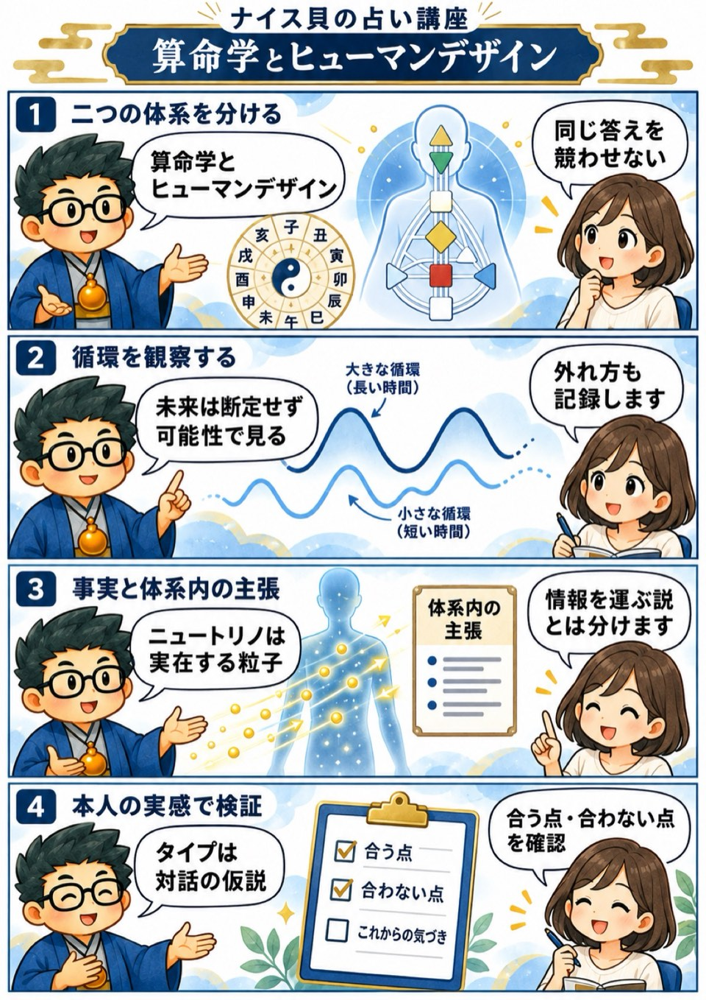

2025年 無料講座・第8回
算命学とヒューマンデザイン
この回の要約
算命学とヒューマンデザインは、同じ答えの正しさを競わせず、それぞれが何を材料に、どんな問いを立てる体系かを分けて学びます。
前半は十干・十二支・干支アニマルを循環として読み、複数周期が重なるため未来を断定できないことを確認します。後半はヒューマンデザインのタイプ、センター、定義、権威、プロファイルなどを紹介します。どの分類も本人の実感を確かめる仮説として扱います。
ニュートリノは実在する素粒子ですが、それが出生時の人格情報を身体へ刻むという説明はヒューマンデザイン体系内の主張です。科学的事実、公式資料が説明する体系内ルール、講師の思想・未来予測を三層に分けます。
4コマ漫画でつかむ

タイムスタンプ
時間を押すと、上の動画がその場面から再生されます。
- 00:00導入・算命学とヒューマンデザイン
- 01:34動物占いと算命学のつながり
- 03:45算命学の流派と学び方
- 05:42算命学で人生の流れを見る
- 07:05十干・十二支・動物を循環として読む
- 08:20未来予測を断定できない理由
- 11:02フラクタルを人生へ広げる講師の解釈
- 11:58大小の周期を波として重ねる
- 15:04社会と相場へ応用する講師の見立て
- 16:47お釈迦様システムという人生比喩
- 18:32六十干支を手で書いて覚える
- 19:52ヒューマンデザインの入口
- 20:141987年の啓示という創始物語
- 21:17ニュートリノの事実と体系内の主張
- 22:261992年に伝え始めた比較的新しい体系
- 23:01カードと権利をめぐる話
- 24:15講師が作った分析システム
- 25:26出生地・時刻から座標を計算する
- 27:05出生時と約88日前の二つの計算点
- 29:25タイプ・センター・プロファイル・ゲート
- 32:16四つのタイプを役割の比喩で学ぶ
- 34:59ジェネレーターと身体反応
- 37:30プロジェクターと招待という考え方
- 38:00マニフェスターとリフレクター
- 39:30九つのセンターと影響の受け方
- 41:50定義型を部署の連携で捉える
- 44:19権威――決断方法を体系内で読む
- 46:01六つのプロファイルの比喩
- 50:34本人の反応と実感で検証する
- 51:40チャンネル・ゲート・人生テーマ
- 54:39まとめと今後の学び
覚えておきたいこと
- 算命学とヒューマンデザインは、共通点があっても別の体系として学ぶ。
- 未来予測は確定せず、外れた事例と反対の証拠も残す。
- ヒューマンデザインは1987年の神秘体験を創始物語に持つ比較的新しい体系。
- ニュートリノの実在と、出生情報を運ぶという体系内の主張を分ける。
- 出生時と約88度前の計算は体系のルールで、無意識形成の科学的証明ではない。
- タイプやセンターを能力・職業・病気・人生の確定診断にしない。
復習ポイント
講義内の占術上の説明・時代の読み・象徴的な解釈は、講師の見立てです。客観的な事実や将来を保証するものではありません。